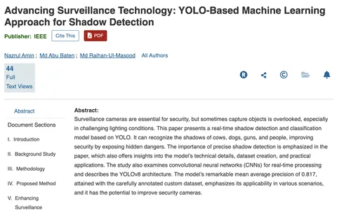
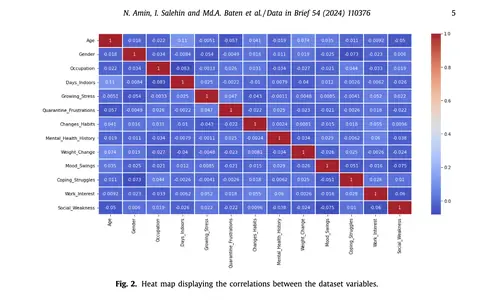
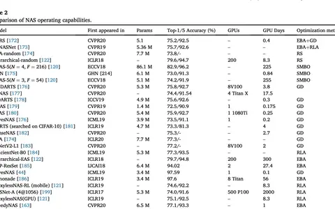
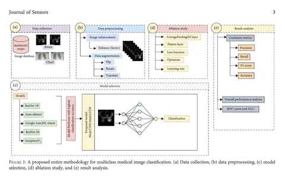
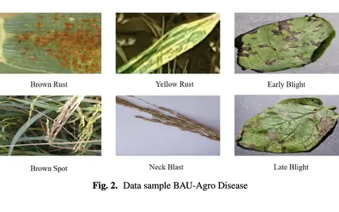
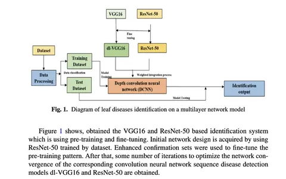
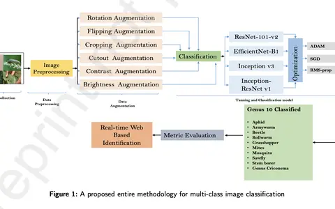

Computer vision on real-world data
Detecting shadows for surveillance, identifying crop insects and leaf diseases from small custom datasets, and classifying medical images in real time.
5 papers · YOLO, CNN, CNN–LSTM, transfer learning
Dhaka, Bangladesh
Machine learning researcher in computer vision and AutoML
I've co-authored 7 published papers on object detection, image classification, AutoML and machine learning datasets. I'm most interested in vision models that hold up on small, real-world data. I also build AI systems, most recently Simigo, an AI executive assistant.
B.Sc. in CSE, Northern University Bangladesh
Three threads run through my papers. Each one started from a practical problem with limited data.
Detecting shadows for surveillance, identifying crop insects and leaf diseases from small custom datasets, and classifying medical images in real time.
5 papers · YOLO, CNN, CNN–LSTM, transfer learning
How neural architecture search and AutoML can build strong models with less manual tuning, and where current methods still fall short.
1 systematic review · AutoML, NAS
Collecting and releasing data where little exists, such as a survey dataset on mental health and depression in Bangladesh during quarantine.
1 data article · Data in Brief
7 articles: 2 journal papers, 3 conference papers, 1 data article and 1 preprint. Written during my time as a research assistant at Deep Lab.

2024 27th International Conference on Computer and Information Technology (ICCIT), IEEE, 2024

Data in Brief, vol. 54, 110376, 2024

Journal of Information and Intelligence (Elsevier), 2024

Journal of Sensors, 2023

Communications in Computer and Information Science, vol. 1749 (Springer), 2023

Lecture Notes on Data Engineering and Communications Technologies (Springer), 2023

Systems I've built outside my papers, from a working AI assistant, a C compiler and a database engine to recommendation and forecasting models.
Oct 2026 – present · sole builder
An assistant for company MDs. It runs their email, calendar, tasks, reminders and meeting minutes from one web app. Business reports come from Excel and CSV uploads, with every figure computed in SQL and checked against the database.
Private code
Mar – Dec 2023
A machine learning system that identifies the shadows of people and objects in images, built on the YOLOv3 object detection architecture.
Research project at Deep Lab
2025
A hybrid recommender for online shops that mixes collaborative filtering with content-based filtering (TF-IDF and embeddings), and adjusts suggestions to what a shopper is doing in the current session.
2025
Predicts each customer's next-day deposit from 12 months of their history. Includes data preparation, exploratory analysis and feature engineering on synthetic data for 1,000 customers.
2023
Notebooks testing Inception v3 and EfficientNet-B1 with flipping and brightness augmentation, plus LSTM models on MNIST and MedMNIST.
Nov 2026 · open source
A compiler for a small subset of C, written in C11 with no dependencies and no parser generators. A hand-written lexer and recursive-descent parser build an abstract syntax tree, a semantic checker enforces scopes and types, and a code generator emits C that compiles without warnings under gcc and clang. Backed by 60 end-to-end tests and CI on Linux and macOS.
Nov 2026 · open source
A relational database written in Java 21 with zero dependencies. Rows live in 4096-byte pages, indexed by a disk-resident B+ tree and cached in a buffer pool with Clock eviction. A rollback journal makes transactions atomic and recovers from crashes, even a forced kill mid-transaction. A hand-written SQL parser and a TCP server on virtual threads serve many clients at once. Built with a multi-agent AI workflow and backed by 165 unit tests plus end-to-end and crash-recovery checks.
Top of my class in two semesters, with research publications before graduating.
Graduated 2023 · Dhaka
Northern University Bangladesh
2019
Birshreshtha Munshi Abdur Rouf Public College, Dhaka. Took part in the inter-college science fair.
Jan – May 2021
Arena Web Security, Dhaka. Network security, cryptography and penetration testing.
Research at Deep Lab, then industry work training people to use digital and AI tools.
Unilever · full-time, project-based contract
Deep Lab · remote
Independent
AI-generated product ad videos, AI audits for businesses, and small automation workflows for lead generation.
Research tools first, plus the engineering I use to ship working systems. I work in Bangla and English.
If you work on computer vision, AutoML or applied machine learning, I'd be glad to hear from you.
© 2026 Md Abu Baten · Dhaka, Bangladesh